Google Search Consoleに登録して最適化
検索エンジンに自サイトを最適化する際、Google Search Console（グーグルサーチコンソール、旧ウェブマスターツール）を利用することをおすすめします。
グーグルアカウントがあれば、無料で利用することができます。
→ Google Search Console
PVや滞在時間など、アクセス数を確認する際はアクセス解析のGoogleアナリティクスが便利ですが、そのアクセスを呼び込むためにサイトを最適化する際には、こちらのSearch Consoleを使用するとよいでしょう。
このツールに登録していなくても検索結果では表示されますが、サイトマップの送信やエラーの把握、あるいは流入キーワードの把握がしやすくなり、ホームページの健康状態を管理しやすくなるメリットがあります。
既にアナリティクスを利用している場合、Analyticsタグで所有者の認証ができるため、別途にタグを設置する必要なく利用を開始することができます。
Search Consoleへのサイトの登録方法
サイトを登録する際は「プロパティを追加」からサイトのURLを登録します。
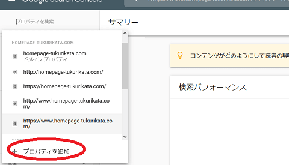
この際、サイトの所有権を確認する必要があるため、用意されているいずれかの方法を選択して確認します。
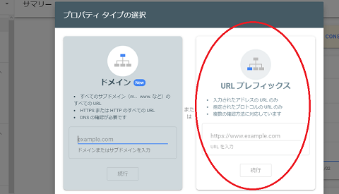
■「URLプレフィックス」を選択した場合
アクセス解析のAnalyticsを利用している場合、「URLプレフィックス」を選択してAnalyticsのタグで認証した方が簡単かと思います。
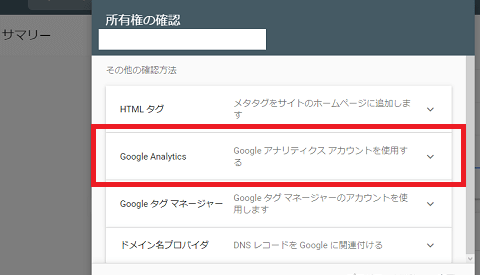
ただ、このURLプレフィックスで認証する場合、「wwwのあり・なし」や「httpとhttps」のそれぞれのURLのバージョンを登録する必要があるため、簡単ではあるものの、手間がかかるかもしれません。
■「ドメイン」を選択した場合
一方、DNSレコードの編集ができるエックスサーバーやバリュードメイン系のコアサーバーなどでは、左側の「ドメイン」を選択してもよいかと思います。DNSレコードに認証タグを設置することで完了するはずです。
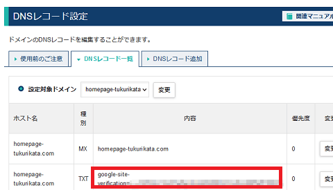
ただ、このDNSレコードの編集はできないレンタルサーバーの方が多いかもしれません。
いずれかの方法で所有権の確認がすめば、ツールを利用できるようになります。
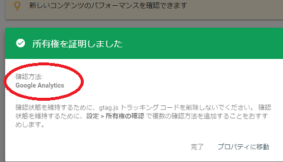
ちなみに、「URLプレフィックス」を選択した場合、wwwあり・なしでそれぞれのURLのパターンを別のサイトとして登録する必要がありますが、この場合は「2サイト分」を登録することになります。
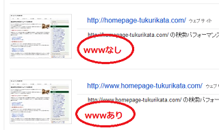
加えて、SSL対応でhttps化している場合も「httpsのあり・なし」と「wwwのあり・なし」でそれぞれのパターンを別々のサイトとして登録する必要があります。
メールでも通知が来るはずですが、ウェブサイトの全バージョンを追加する必要があります。
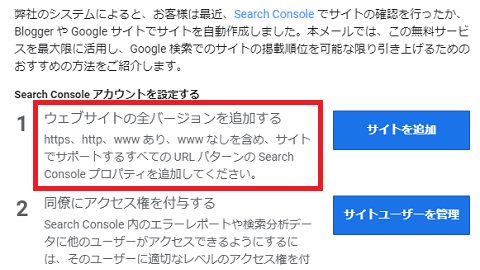
この手間を考えれば、上記の「ドメイン」で認証してしまった方が楽かもしれません。
また、こちらは既に廃止されましたが、wwwあり・なしでURLをどちらかに統一する際、以前までは右上の歯車のアイコンの箇所にある「サイトの設定」から使用するドメインを指定することができました。
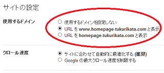
ただ、新バージョンではこちらの機能がなく、使用するURLはGoogleが決めるようになったため、<link rel="canonical"でURLを正規化しておけば、特に問題はないかと思います。
■サイトマップの送信
確認が済んだら、まず最初に管理ツールからサイトマップの送信をしておくことをおすすめします。
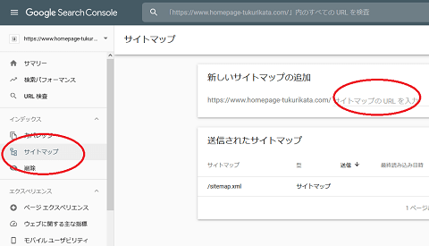
データが反映されるまでに時間がかかりますが、時間をあけてアクセスすると反映されているはずです。そのほか、クロールのエラーなどがあればチェックしておくとよいでしょう。
これらのサイトマップの送信はrobots.txtで指定することもできますが、こちらのGoogle Search Consoleを利用した方がより確実に通知することができます。
■Analyticsとの関連付け
また、「設定」 → 「協力者」の箇所からAnalyticsと関連付けておくことをおすすめします。
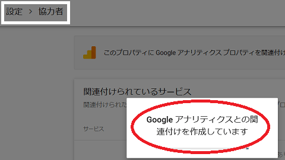
現在のところ、最新版GA4のAnalyticsではこの関連付けができないようですが、旧バージョンを使用している場合はできるはずです。
この関連付けのメリットについてですが、Analyticsの管理画面の「集客」 → 「Search Console」の箇所で「検索クエリ」を確認できるようになります。
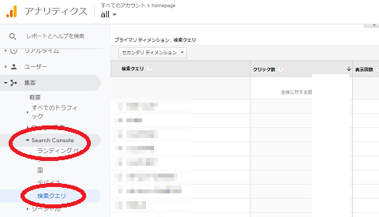
そのほかのメリットはあまり感じたことはありませんが、「より詳細な分析データを得られる可能性があります」とのことで、関連付けをすることで何らかのメリットがあると思います。
アクセスアップにつなげるSearch Consoleの使い方
このSearch Consoleの特徴ですが、自サイトへの流入キーワードとクリック数、平均検索順位を確認できるため、自サイト内で検索エンジンに強いコンテンツを確認することができます。既に上位に表示されているコンテンツについては、検索エンジンに認められているため、そのコンテンツで訪問者が求めているニーズを満たすことをおすすめします。
もし片手間で作成したページが5～20位あたりでウロウロしていた場合、そちらのコンテンツを強化して1位～3位まで上げることで効率的にアクセスアップにつなげることができます。
また、上位表示されているコンテンツの傾向を把握することで、自サイトの専門性、あるいは権威性がGoogleにどのように認識されているのかを確認することができます。
例えば、当サイトでは「HTML」関連でのアクセスは多いですが、「レンタルサーバー」関連では弱く、「SEO対策」では全くヒットしません。このような場合、HTML関連のコンテンツを重点的に作成した方がアクセスアップしやすい傾向があります。
実際の使い方についてですが、まずは平均掲載順位の箇所をクリックしてクエリの一覧を表示します。
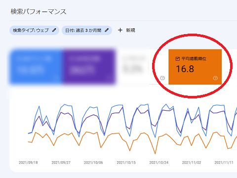
次に、既に5～20位あたりにランクインしているキーワードを確認します。
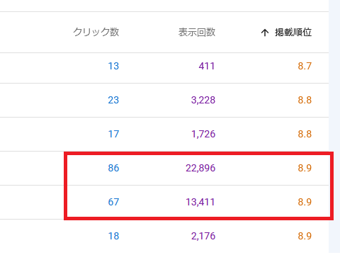
このうち、十分に時間をかけて作成したコンテンツについては、それが自サイトの限界ともいえますので、そのようなキーワードは除外します。まだ改善の余地があり、なおかつ表示回数の多いクエリを重点的にチェックしていくとよいでしょう。
この「表示回数」についてはキーワードの月間検索回数ではなく、検索結果で自サイトへのリンクが表示された回数を表す数字になりますが、概ね、表示回数の多いクエリで上位に表示されるとアクセスアップにつながります。
候補となるクエリを見つけましたら、実際にそのクエリで検索してどのページがヒットするのかを検索結果で確認します。上記の場合、8位か9位あたりに表示されているはずです。
表示されているURLを確認しましたら、次にSearch Consoleの「＋新規」→「ページ」の箇所でそのURLを指定して確認します。
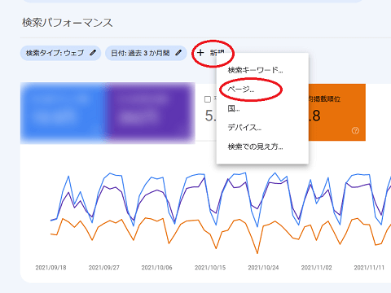
すると、そのURLに流入しているその他のクエリの一覧を確認することができます。
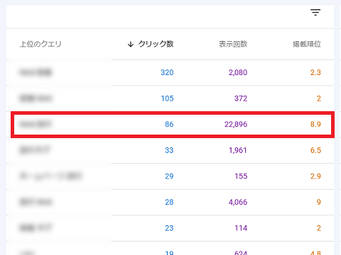
このページの場合、既に他のクエリでは２位となっており、ある程度のアクセス数が流入してはいますが、チェックした8.9位のクエリの方が表示回数は5倍以上で多いため、そちらのキーワードに寄せてコンテンツを作成しなおした方がアクセスアップにつながるはずです。
改善が必要なURLの確認方法
そのほか、Search Consoleでは改善が必要なURLをチェックすることができます。
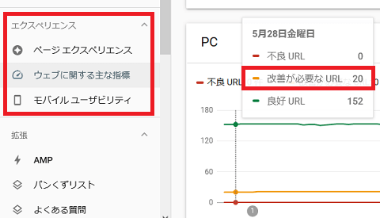
AMPや構造化データなど、画像の大きさが小さいなどの警告が出ている箇所については修正して対応しておくとよいでしょう。
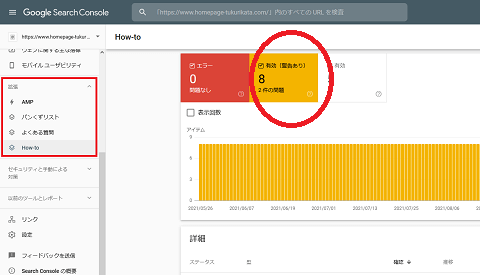
■バックリンクの確認方法
過剰なSEO対策などで手動ペナルティーを受けた場合、「セキュリティと手動による対策」の箇所に通知が来ます。
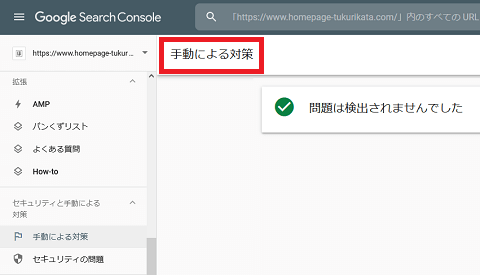
この場合、「リンク - 外部リンクをエクスポート」の箇所からバックリンクを確認し、疑わしいリンクについてはサイト運営者などに連絡した上で削除してもらうことをおすすめします。SEO業者に依頼したものや自作自演のリンク、あるいは相互リンクサービスなど、疑わしい被リンクがないかをチェックしましょう。
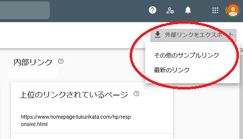
サイト運営者に連絡しても外してもらえない場合、「リンク否認ツール」から無効にすることもできますが、こちらは慎重に使用することをおすすめします。
また、ドメイン変更でサイトを移転する際は、前サイト運営者のバックリンクが残っているケースもあり、手動対策の原因となってしまう可能性もあるため、そのような場合もこちらの否認ツールで無効化しておきます。
上記のバックリンクのチェックをした上で、旧サイト側の「設定」 → 「アドレス変更」の箇所からサイトの移行設定をしておくことをおすすめします。
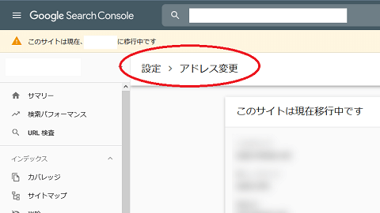
こちらの移行設定はなかなか終わらないこともありますが、旧サイト側には301リダイレクトの設定もしておくとよいでしょう。